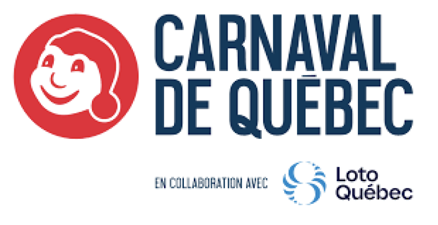
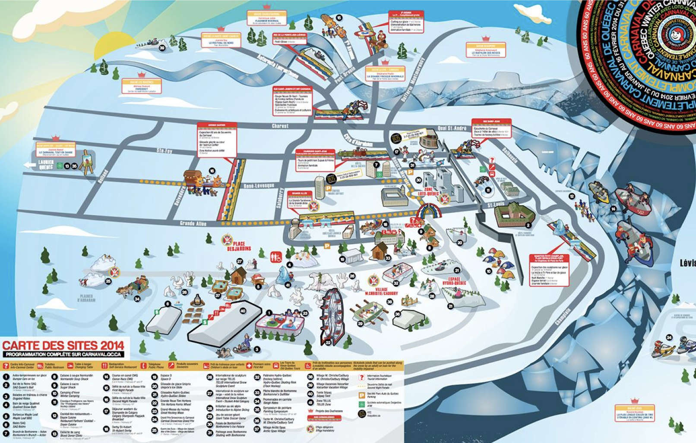
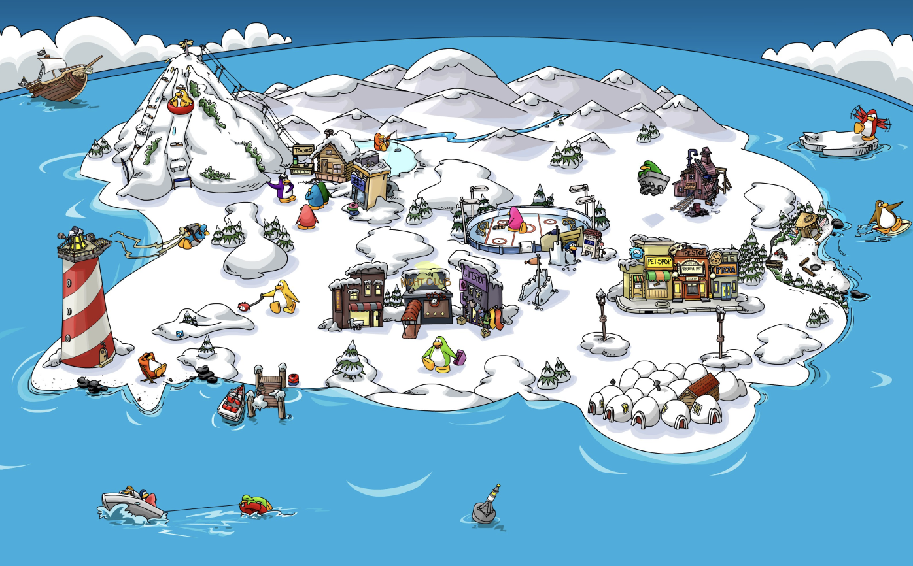
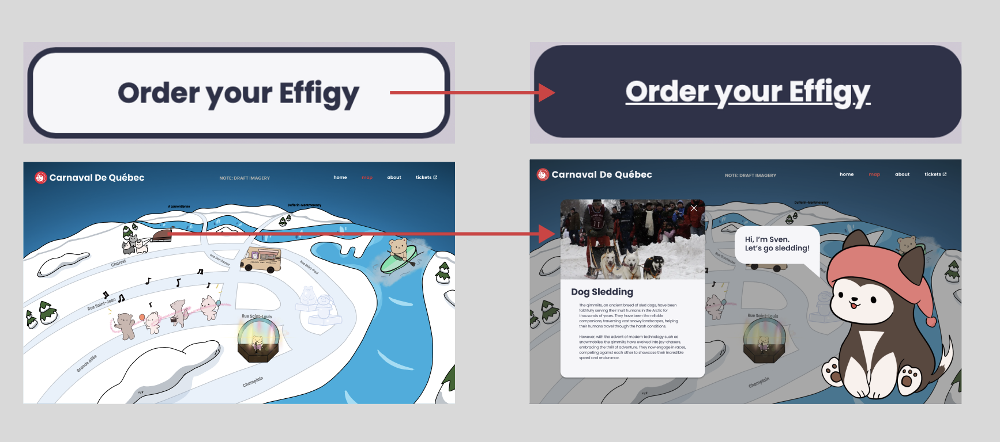
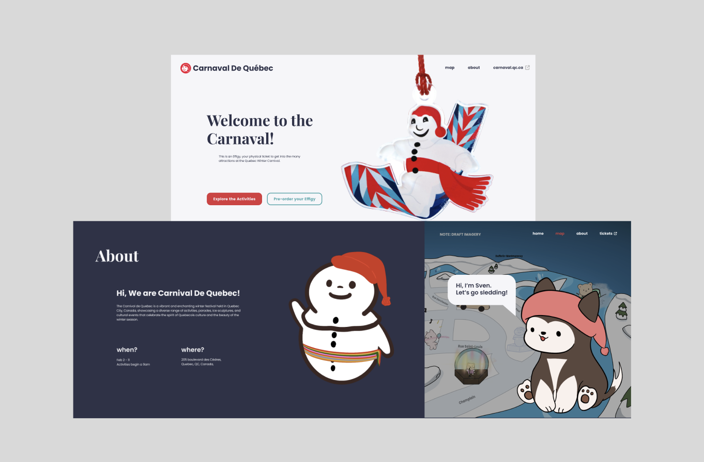
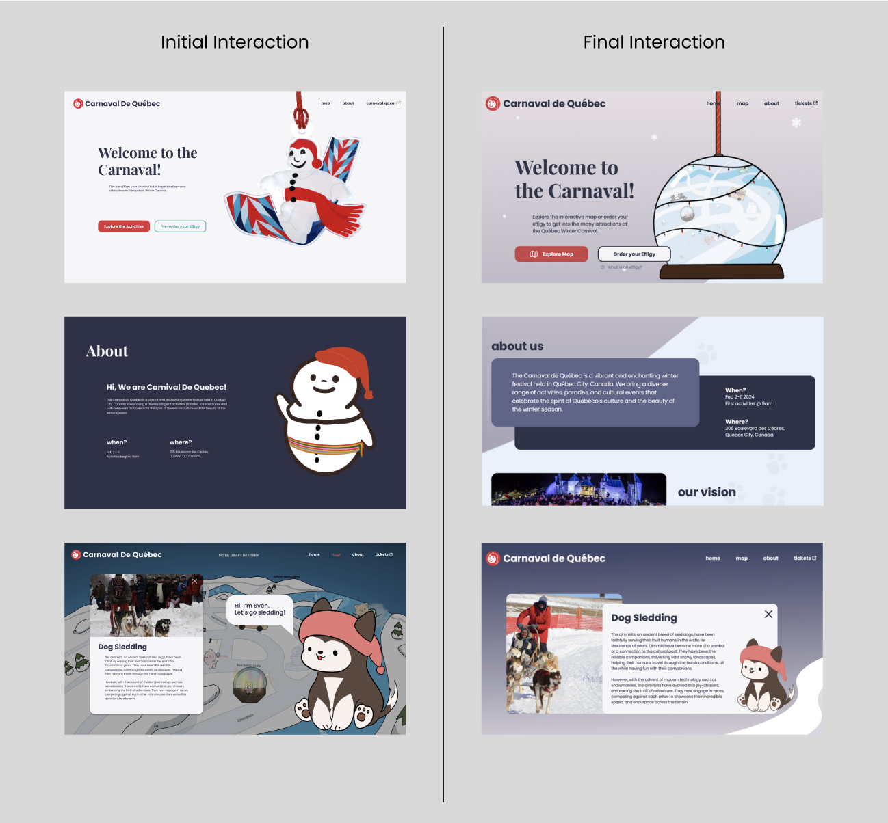
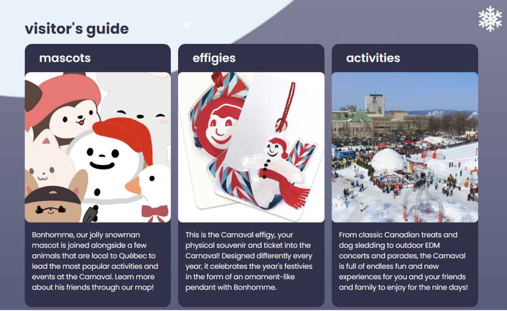
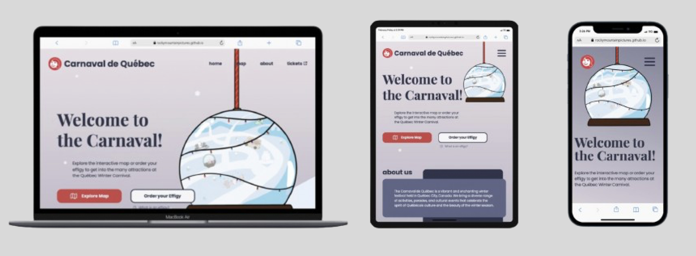

PROJECT OVERVIEW
Quebec Winter Carnival is the largest winter festival in the world that happens annually in Quebec City.
This academic project involved collaborating with a team of 3 to redesign an existing Quebec Winter Carnival website.
This included organizing information strategically to develop a stunning user interface, and ensuring responsiveness for both laptop and mobile phone users.
PROBLEM
The website lacked a map feature which make tourists finding it difficult to locate the offered activities and their respective locations.
In addition, upon researching the existing map interface, it appeared complex and confusing.
As a result, users would find it time-consuming to discover the activities they may wish to pursue.

Current Quebec Winter Carnival map
RESEARCH
My initial task involved researching tourist feedback on TripAdvisor to identify any issues encountered during the winter festival.
The findings revealed that tourists struggle to locate their desired activities within the festival grounds.
Consequently, I recommended to my team members to develop an interactive map to streamline visitor navigation.
Subsequently, I was assigned to determine the essential activities to be featured on the map.
To accomplish this, I analyzed popular winter activities showcased on competitor websites, such as Vernon Winter Carnival, Winterlude and Winter Festival of Light.
In addition, I also searched for simple attraction map such as Club Penguin to gain inspiration for how our interactive map will look like.

Map inspiration from Club Penguin
DESIGN
Initial Iteration
Refining the Element Layout
I utilized CSS margin and padding properties to generate white space around crucial elements, thereby enhancing usability by facilitating easy button-clicking and improving overall aesthetics, aiding users in distinguishing between various elements.
In addition, I also utilized position properties to overlay the icons onto the map
Enhancing the Interactivity
In order to make my homepage more interactive, I incorporated animation effects into all call-to-action elements to give them a clickable appearance.
Furthermore, I incorporated a popup feature on my map webpage to enhance user engagement and allowing users to discover more about the activities.

Adding animation to UI element
Challenge
The backgrounds of the homepage and about page appeared simple due to the minimal use of decorative elements.
In addition, the dog illustration looks distracting so therefore, it was hard for the user to focus on the content.

Initial website design
Refinement
Step 1: Minimizing Distraction
I decreased the size of the dog illustration and eliminate its speech, ensuring improved readability of the content.
Step 2: Enhancing Webpage Appearance
I enhanced the visual appeal of the website by incorporating a background using the 'background-image' property.
Step 3: Adding Map Preview
I replaced the hero image with a snow globe to provide users with a preview of our interactive map.

Comparing initial and final website design
Final Iteration
As a result of our drastic changes such as adding gradient and decorative elements to the background, we created a more winter-themed and visually appealing interface.
Furthermore, we have provided additional context about the winter festival, showcasing essential information to offer a comprehensive understanding of the event.

Essential information for the user
Website Responsiveness
As a result of our drastic changes such as adding gradient and decorative elements to the background, we created a more winter-themed and visually appealing interface.
Furthermore, we have provided additional context about the winter festival, showcasing essential information to offer a comprehensive understanding of the event.

Variations of the website across different devices
REFLECTION
After completing the desktop version of the website, I aimed to enhance functionality by creating tablet and mobile versions.
This involved implementing media queries, where I established three breakpoints for laptops, tablets, and mobile devices.
Subsequently, I adjusted the layout and positioning to ensure an optimized user experience across varying screen sizes.